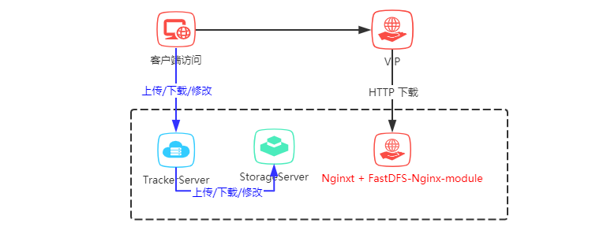

前面已经讲 一张图秒懂微服务的网络架构，通过此文章可以了解FastDFS组件中单机安装流程。

以下为单机FastDFS安装步骤
CentOS 7.X
libfastcommon 请采用最新版本， 本次使用最新版本： libfastcommon-1.0.42.tar.gz
FastDFS 请采用最新版本， 本次使用最新版本： fastdfs-6.04.tar.gz
fastdfs-nginx-module 请采用最新版本， 本次使用最新版本：fastdfs-nginx-module-1.22.tar.gz
nginx 请采用最新版本， 本次使用最新版本： nginx-1.16.1.tar.gz
tar -zxvf libfastcommon-1.0.42.tar.gz
cd libfastcommon-1.0.42/
./make.sh
./make.sh installtar -zxvf fastdfs-6.04.tar.gz
cd fastdfs-6.04/
./make.sh
./make.sh installcp /etc/fdfs/tracker.conf.sample /etc/fdfs/tracker.conf
cp /etc/fdfs/storage.conf.sample /etc/fdfs/storage.conf
cp /etc/fdfs/client.conf.sample /etc/fdfs/client.conf
cd /opt/apps/fastdfs-6.04/conf
cp http.conf mime.types /etc/fdfs/vim /etc/fdfs/tracker.conf#tracker server端口号
port=22122
#存储日志和数据的根目录
base_path=/opt/fastdfs/tracker
#HTTP服务端口
http.server_port=801、打开跟踪端口
vim /etc/sysconfig/iptables2、添加以下端口行：
-A INPUT -m state --state NEW -m tcp -p tcp --dport 22122 -j ACCEPT3、重启防火墙
service iptables restart/etc/init.d/fdfs_trackerd startvim /etc/fdfs/storage.conf#storage server端口号
port=23000
#数据和日志文件存储根目录
base_path=/opt/fastdfs/storage
#第一个存储目录
store_path0=/opt/fastdfs/storepath0
#tracker服务器IP和端口
tracker_server=192.168.0.1:22122
#http访问文件的端口(默认8888,看情况修改,和nginx中保持一致)
http.server_port=88881、打开跟踪端口
vim /etc/sysconfig/iptables2、添加以下端口行：
-A INPUT -m state --state NEW -m tcp -p tcp --dport 23000 -j ACCEPT3、重启防火墙
service iptables restart/etc/init.d/fdfs_storaged start fdfs_monitor /etc/fdfs/storage.conf list
查看状态是否正常
Storage 1:
id = 6.0.36.243
ip_addr = 6.0.36.243 (anantes-651-1-49-net.w2-0.abo.wanadoo.fr) ACTIVE
vim /etc/fdfs/client.conf
#
base_path=/opt/apps/fastdfs/client
#tracker服务器IP和端口
tracker_server=192.168.0.1:22122
fdfs_upload_file /etc/fdfs/client.conf test.jpgtest.jpg 是测试本地上传的图片，路径请填写正确
#解压fastdfs-nginx-module
tar -zxvf fastdfs-nginx-module-1.22.tar.gz
cd fastdfs-nginx-module-1.22/
cp ./src/mod_fastdfs.conf /etc/fdfs
#解压nginx
tar -zxvf nginx-1.16.1.tar.gz
cd nginx-1.16.1/
#安装nginx_http_image_filter_module
yum -y install gd-devel
yum -y install zlib zlib-devel openssl openssl--devel pcre pcre-devel
#添加模块
./configure --add-module=../fastdfs-nginx-module-1.22/src --prefix=/usr/local/nginx --with-http_image_filter_module
#编译nginx
make
#安装nginx
make install/usr/local/nginx/sbin/nginx -V查看插件是否安装成功
[root@FastDFS nginx-1.16.1]# /usr/local/nginx/sbin/nginx -V
nginx version: nginx/1.16.1
built by gcc 4.8.5 20150623 (Red Hat 4.8.5-11) (GCC)
configure arguments: --add-module=../fastdfs-nginx-module-1.21/src --prefix=/usr/local/nginx --with-http_image_filter_module
[root@FastDFS nginx-1.16.1]#
vim /etc/fdfs/mod_fastdfs.conf修改配置如下：
#
connect_timeout=10
#tracker服务器IP和端口
tracker_server=192.168.0.1:22122
#是否启用group组名
url_have_group_name=true
#
store_path0=/opt/fastdfs/storepath0vim /usr/local/nginx/conf/nginx.conf修改配置如下:
server {
listen 80;
server_name localhost;
#charset koi8-r;
#access_log logs/host.access.log main;
location / {
root html;
index index.html index.htm;
}
#图片带压缩访问
location ~ /group1/M00/(.*)\.(jpg|gif|png)!format=([0-9]+)_([0-9]+) {
alias /home/fastdfs/storage/data/;
ngx_fastdfs_module;
set $w $3;
set $h $4;
rewrite group1/M00(.+)\.(jpg|gif|png)!format=([0-9]+)_([0-9]+)$ group1/M00$1.$2 break;
image_filter resize $w $h;
image_filter_buffer 5M;
}
#主图访问
location ~ /group([0-9])/M00/(.+)\.?(.+) {
alias /home/fastdfs/storage/data/;
ngx_fastdfs_module;
}
...
}
#启动
/usr/local/nginx/sbin/nginx
#停止
/usr/local/nginx/sbin/nginx -s stop
#重启
/usr/local/nginx/sbin/nginx -s reload通过以上配置完成FastDFS的搭建。
图片访问示例：
主图访问
http://192.168.0.1/group1/M00/00/03/BgAk813IvTCAIxxxAAD44NFKFPc908.png
压缩图片 (主图后加
!format=宽度_高度)访问http://192.168.0.1/group1/M00/00/03/BgAk813IvTCAIxxxAAD44NFKFPc908.png!format=400_10
压缩图片使用主图后?format=宽度_高度
本文由博客一文多发平台 OpenWrite 发布！
再次感谢!!! 您已看完全文，欢迎关注微信公众号猿码 ，你的支持是我持续更新文章的动力！